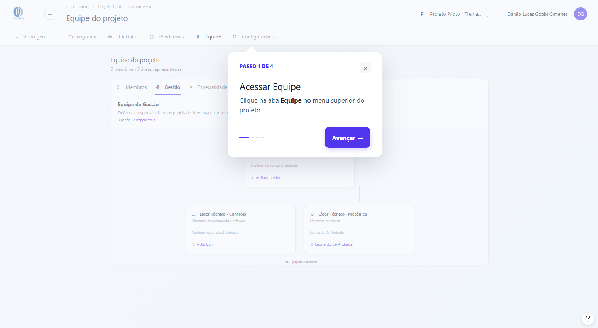
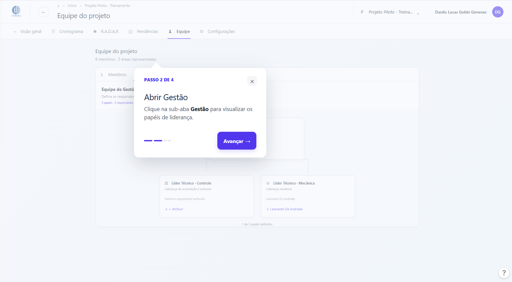
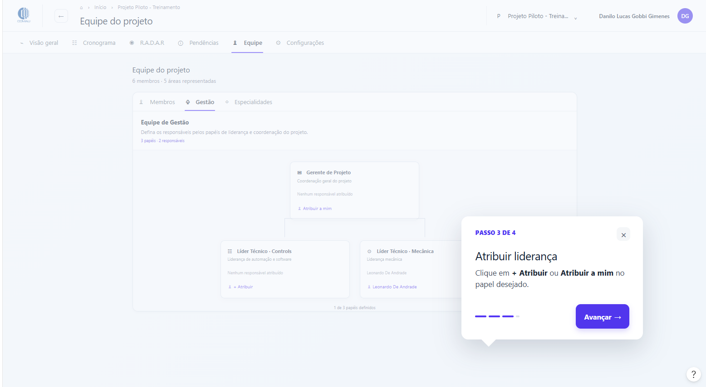
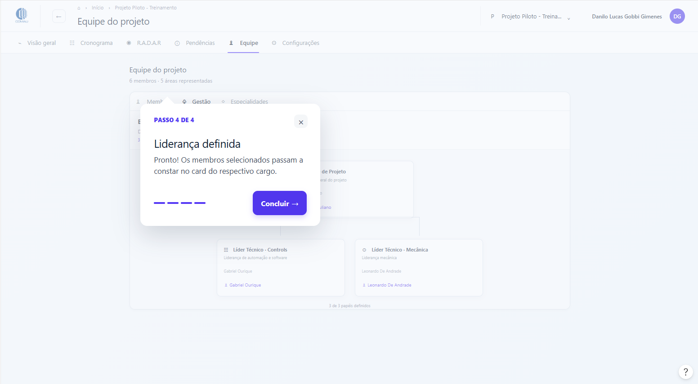

Introdução
O que é Project Hub?
O Project HUB é a plataforma corporativa interna desenvolvida para centralizar a gestão, o planejamento e o acompanhamento de projetos de engenharia e automação industrial da Comau. Ele unifica em um único ambiente digital o acompanhamento operacional e executivo, permitindo monitorar o progresso físico de cronogramas, entregas técnicas (milestones e Design Reviews), resolução de pendências e alocação de equipes multidisciplinares.
Introdução
1.2 Como usar o Project HUB?
Ao entrar na plataforma, você pode alternar o trabalho no dashboard entre 4 modos de navegação: Visão Geral (cards de resumo e KPIs), Projetos (explorador de workspaces), Lista (suas tarefas pessoais) e Board (quadros Kanban). No topo da tela, utilize o alternador para trocar de projeto rapidamente.
A plataforma organiza a navegação em duas camadas principais: o nível global (portfólio geral e sua rotina) e o nível de projeto (o workspace técnico de cada contrato/escopo)[cite: 1].
1.2.1 Camada Global (Seu Painel Geral)
-
Visão Geral: Apresenta um panorama rápido do seu dia a dia de trabalho. Reúne a linha do tempo consolidada dos projetos em andamento, alertas de marcos contratuais próximos, atalhos para suas pendências e o feed de atividades recentes[cite: 1].

-
Projetos: Lista todos os projetos internos da empresa em que você participa ou aos quais pode solicitar acesso[cite: 2]. Exibe cliente, percentual de progresso, volume de tarefas e equipe[cite: 2]. É por onde novos projetos são criados via botão "+ Criar projeto"[cite: 2].

-
Minhas Tarefas: Painel focado nas atividades e demandas individuais atribuídas diretamente ao seu usuário[cite: 2].

-
Configurações e Suporte: Acessos na barra lateral inferior para ajustar parâmetros do sistema e consultar a Central de Ajuda[cite: 3].

1.2.2 Camada de Projeto (Dentro de um Workspace Ativo)
Ao selecionar um projeto específico (como o Projeto Piloto - Treinamento), a barra superior abre as ferramentas de acompanhamento do escopo[cite: 3]:
-
Visão Geral: Painel executivo do projeto selecionado[cite: 3]:
-
Curva S de Evolução: Gráfico que compara o avanço planejado versus o realizado, apontando os desvios de cronograma em pontos percentuais[cite: 3].

-
Desempenho por Especialidade: Monitoramento detalhado das disciplinas técnicas do projeto (Projeto 3D, Simulação, Ciclograma, R.A.M.S., OLP, Hardware, Fluídica, Software Offline e Comissionamento Virtual)[cite: 4].

-
Milestones: Acompanhamento dos marcos contratuais e revisões formais de engenharia (DR1, DR2, DR3, liberações de conceito e processamento), com contagem de dias restantes e status[cite: 4].

-
Curva S de Evolução: Gráfico que compara o avanço planejado versus o realizado, apontando os desvios de cronograma em pontos percentuais[cite: 3].
-
Pendências: Quadro de registro e tratativa de desvios técnicos e operacionais[cite: 5]. Permite criar pendências, definir prioridades, apontar prazos de resolução e designar responsáveis[cite: 5].

-
Equipe: Gestão dos colaboradores alocados no projeto, detalhando seus departamentos, calendários de trabalho e níveis de permissão interna[cite: 5].

Primeiros Passos
Como configurar perfil e credenciais?
Para personalizar suas informações, alterar sua senha ou gerenciar suas preferências no Project Hub, você precisará acessar a área de configurações da sua conta.
Passo 1: Clicar sobre seu nome
- Após fazer o login, você será direcionado para a tela principal (Visão geral).
- Localize o seu nome completo e o seu avatar (círculo com suas iniciais) no canto superior direito da tela.
- Clique sobre o seu nome ou avatar para abrir o menu de opções do perfil.

Passo 2: Acesse o menu do perfil
- Clique em “Minha conta”.

Passo 3: Personalize suas informações e preferências
- Foto de perfil: Para atualizar sua foto de exibição, clique no botão "Alterar foto" (arquivos suportados: JPG, PNG ou WebP com até 2 MB).
- Informações pessoais: Confira ou edite seu Nome completo e seu Departamento nos campos de texto. O campo E-mail corporativo exibe o endereço vinculado à sua conta.

Passo 4: Dados e Preferências
- Preferências: Escolha o Tema da interface de sua preferência (Claro, Escuro ou sincronizado com o Sistema) e selecione o Idioma no menu suspenso.

Passo 5: Altere sua senha (se necessário)
- Na seção Senha e segurança, digite sua Senha atual.
- No campo Nova senha, crie a combinação desejada respeitando os requisitos (mínimo de 8 caracteres, com pelo menos um número e um símbolo).
- Digite novamente a mesma chave no campo Confirmar nova senha.
- Clique no botão "Alterar senha" para concluir a redefinição de segurança.

Passo 6: Salve as alterações
- Após atualizar suas informações cadastrais ou preferências de interface, clique no botão azul "Salvar alterações", localizado no canto inferior direito da página.

Primeiros Passos
Como Criar um projeto?
Primeiros Passos
Entendendo os níveis de acesso e permissões
No Project HUB, o acesso às ações dentro de cada projeto é controlado por perfis de função específicos, garantindo governança técnica e segurança na edição do escopo e dos prazos.
Níveis de Permissão no Projeto
- Administrador: Possui controle total sobre o projeto. Pode gerenciar membros e atribuir permissões, editar a estrutura do cronograma, ajustar todas as configurações do workspace e excluir o projeto.
- Gestor: Focado na condução operacional. Edita o cronograma, ajusta as configurações operacionais e gerencia membros da equipe (exceto outros Administradores). Não tem permissão para excluir o projeto.
- Membro: Perfil de execução técnica. Tem permissão para atualizar o avanço percentual e os dados das tarefas que estão atribuídas diretamente a ele, sem permissão para alterar a estrutura de prazos ou dependências do cronograma.
- Visualizador: Acesso restrito para consulta em modo somente leitura (read-only). Permite acompanhar o andamento, dashboards e pendências sem realizar edições ou alterações no conteúdo.
Primeiros Passos
Como alterar as permissões de um membro no projeto[cite: 7, 8]
Passo 1: Acesse a área de equipe[cite: 8]
- Abra o workspace do projeto no qual deseja realizar a alteração[cite: 8].
- Na barra de navegação superior, clique na aba "Equipe"[cite: 8].
- Certifique-se de estar na sub-aba "Membros"[cite: 8].

Passo 2: Localize o usuário[cite: 8]
- Na lista de colaboradores, utilize a barra de busca "Buscar membros" ou localize o nome do colaborador manualmente na tabela[cite: 8].
- Identifique a linha correspondente ao usuário e vá até a coluna "Permissão"[cite: 8].

Passo 3: Altere o papel de acesso[cite: 8]
- Clique no botão de seleção suspenso (dropdown) que exibe a permissão atual do membro (por exemplo, onde consta "Administrador")[cite: 8].
- Na lista de opções suspensa, selecione o novo papel desejado (Administrador, Gestor, Membro ou Visualizador)[cite: 8].
- A nova permissão é aplicada imediatamente ao usuário no projeto correspondente[cite: 8].

Funções do Projeto
Como funcionam as fases do projeto (Planejamento, Ativo e Concluído)?
O ciclo de vida dos projetos dentro do Project HUB é organizado em três fases principais de governança:
- Planejamento (PLANNING): Fase preliminar onde a estrutura de tópicos (WBS), metas e líderes são associados antes do início dos trabalhos práticos.
- Ativo (ACTIVE): Etapa na qual o projeto está em desenvolvimento contínuo, com apontamento de horas, resolução de pendências e atualizações de percentual de conclusão.
- Concluído (CLOSED): Encerramento formal do cronograma, onde o workspace passa a ficar arquivado ou em modo somente leitura para auditoria.
Funções do Projeto
Como criar uma pendência?
Passo 1 — Acessar Pendências
No menu superior do projeto, clique na aba Pendências para abrir a tela de gerenciamento.

Passo 2 — Iniciar Nova Pendência
No canto superior direito da tela, clique no botão roxo + Criar pendência para abrir a janela de cadastro.

Passo 3 — Preencher os Dados
Preencha os campos com as informações da ocorrência:

Passo 4 — Concluir e Guardar
Confira as informações preenchidas e clique no botão Criar pendência, localizado no canto inferior direito, para salvar o registro.

Passo 5 — Pendência Ativa
A nova pendência passa a constar diretamente na lista com o status Aberta, exibindo o prazo estipulado e o responsável definido.

Funções do Projeto
Como adicionar especialidades?
Passo 1 — Acessar Equipe
Na tela inicial do projeto, clique na aba Equipe no menu superior.

Passo 2 — Entrar em Especialidades
Dentro da área de equipe, selecione a aba Especialidades, localizada ao lado de "Gestão".

Passo 3 — Criar Nova Especialidade
No canto superior direito da lista, clique no botão roxo + Nova especialidade para habilitar o campo de cadastro.

Passo 4 — Digitar o Nome e Salvar
Digite o nome desejado na caixa de texto em branco que apareceu no final da lista e clique no botão Adicionar para salvar.

Funções do Projeto
Como definir equipe de gestão?
Página 1: Visão Geral do Projeto
A partir da tela principal de Visão geral, localize o menu superior de navegação e clique na opção Equipe para acessar a gestão de membros e o organograma de liderança do projeto.

Página 2: Painel da Equipe
A tela inicial exibe a lista geral de todos os membros cadastrados. Para abrir o organograma com os papéis executivos, clique na sub-aba Gestão, localizada logo abaixo do título principal.

Página 3: Organograma de Papéis
O painel apresenta os cargos de liderança, como Gerente de Projeto, Líder Técnico - Controls e Líder Técnico - Mecânica. Para definir os responsáveis, clique no botão + Atribuir para pesquisar e selecionar o nome do colaborador, ou clique em Atribuir a mim caso queira assumir o papel diretamente.

Página 4: Confirmação da Gestão
Após a confirmação, os nomes e avatares dos gestores selecionados passam a ser exibidos dentro do respectivo card. A plataforma permite definir múltiplos responsáveis para o mesmo papel executivo; para incluir mais pessoas, basta clicar novamente em + Atribuir logo abaixo dos nomes já listados.
